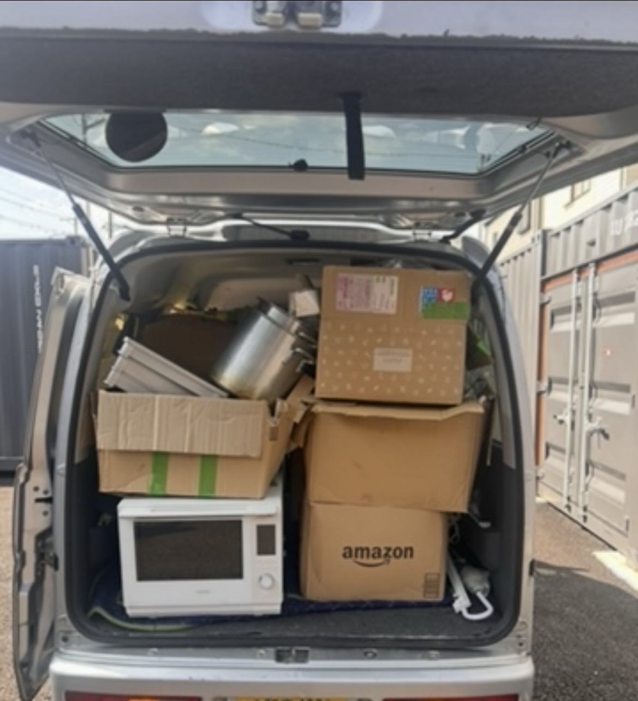

回収・リユース
使わなくなった家具や家電を、
次の使い道へ。
- 洗濯機・冷蔵庫など1点から
- 家具・家電をまとめて相談
- 状態により買取・無料引取の相談
料金目安（税込）小型家電・家具1点 5,500円〜
大阪を中心に、関西エリアまで
不用品1点から、家具・家電の調達、
小さなお引越しのお手伝いまで。
まずは、写真と「こんなことできる？」から。

「捨てたい」も「欲しい」も。
ゴンゴリラにご相談ください。
01 / SERVICES & PRICE
サービスと料金の決まり方を比較。
正式な金額は、内容を確認して事前にご案内します。
使わなくなった家具や家電を、
次の使い道へ。
予算と暮らしに合うリユース品を、
探すところから、お届けまで。
家具1点の移動も、
少量のお引越しも。
上記は税込の料金目安です。基本条件・追加費用は下の料金表をご確認ください。知人向けの過去実績とは区別しています。
| 比較項目 | 回収・リユース | 家具・家電の調達 | 運搬・引越しサポート |
|---|---|---|---|
| こんなときに | 使わない物を手放したい | 必要な物を予算内で探したい | 手持ちの荷物を移動したい |
| 主な内容 | 品物の確認・搬出・引取の相談 | 商品探し・状態確認・お届けの相談 | 搬出・運搬・搬入のお手伝い |
| 料金の決まり方 | 品目・状態・数量・搬出条件 | 商品・ご希望条件・配送条件 | 物量・移動距離・搬出入条件 |
| 先に伝えること | 写真・数量・年式・設置場所 | 欲しい物・予算・サイズ・希望時期 | 荷物・出発地と到着地・階段の有無 |
スマホでは表を左右にスクロールできます。
BEFORE YOU DECIDE
写真と条件をお聞きして、対応可否・作業範囲・料金をご案内。
追加作業や条件変更がある場合も、金額を確認してからご判断ください。
品目・数量・状態／階段やエレベーター／搬出入経路／距離／解体や作業人数
支払総額と内訳、配送・設置・解体の範囲、追加費用が発生する条件
引取・処分の可否や、リサイクルに関わる費用は品物ごとに確認します。すべての品物が対象とは限りません。
PRICE MENU / 全34メニュー
掲載額は、下記の基本条件での料金目安です。品物・数量・搬出入条件・距離を確認して、作業前に支払総額をご案内します。
近隣エリア・1階またはエレベーター利用・通常の搬出入経路・作業員1名。近隣は稼働拠点から片道10km以内を想定し、拠点と対象地域は見積時に明示します。
34メニューを表示
| メニュー・基本条件 | 税込料金目安 |
|---|---|
| 小型家電・小型家具1点 / 小棚・電子レンジなど | |
| 縦型洗濯機1台 / 1名で対応できる物 | |
| 小型冷蔵庫1台 / 170L未満・条件確認 | |
| ベッドフレーム1台 / 解体は追加オプション | |
| 棚・タンス1点 / 1名で対応できる物 |
近隣出張・現場作業30分までを含む。再使用可能品の引取相談と搬出作業が対象です。
| メニュー・基本条件 | 税込料金目安 |
|---|---|
| ミニパック荷室の約1/4 / 作業45分まで | |
| Sパック荷室の約1/2 / 作業60分まで | |
| Mパック荷室の約3/4 / 作業90分まで | |
| Lパック軽バン1台分 / 作業120分まで |
リユース対象品・荷物は仕分け済みが前提。写真で荷室・積載重量・対象品を確認します。積み放題の保証ではありません。
| メニュー・基本条件 | 税込料金目安 |
|---|---|
| 家具・家電1点運搬5km以内 / 全作業60分まで | |
| 家具・家電2〜3点運搬5km以内 / 全作業90分まで | |
| 軽バン1台分運搬10km以内 / 全作業120分まで | |
| 店舗・個人宅で受取→配送運搬5km以内 / 全作業60分まで |
梱包済み・積載可能な荷量が前提。全作業時間は引取場所での作業開始からお届け完了までです。
| メニュー・基本条件 | 税込料金目安 |
|---|---|
| 少量の1Rサポート10km以内 / 1台1行程 / 2時間まで | |
| 1R・1Kサポート20km以内 / 1台1行程 / 3時間まで | |
| 搬出入のお手伝いだけ1名・1時間 / 車両での運搬なし |
荷造り済みの荷物が対象。間取り名だけで量は決めず、事前に荷物一覧を確認します。大型品・複数行程は別見積もりです。
| メニュー・基本条件 | 税込料金目安 |
|---|---|
| 縦型洗濯機のお探し・お届け中古 / 4.5〜6kgの目安 | |
| 小型冷蔵庫のお探し・お届け中古 / 120〜170Lの目安 | |
| 洗濯機＋冷蔵庫中古家電2点セット | |
| 洗濯機＋冷蔵庫＋チェスト中古の家具・家電3点セット | |
| 調達＋少量1R引越し3点セット＋10km・2時間の引越し |
中古商品代・お探し・近隣配送込み。商品条件・在庫により用意できない場合があります。設置範囲・保証は見積時に明示。引越しセットは調達・配送と引越しが各1回です。
| メニュー・基本条件 | 税込料金目安 |
|---|---|
| 家具の室内移動同一階・1名 / 1時間まで | |
| 粗大ごみ出しのお手伝い指定の収集場所まで / 1時間 | |
| ベッドの分解だけ1台 / 単独出張・1時間まで | |
| 荷物の仕分け・梱包1名 / 1時間まで・資材別 | |
| 倉庫・店舗の整理サポート1名 / 3時間まで・処分別 |
近隣出張込み。ごみ出しは現地での搬出作業のみ。収集の申込・指定券・処分代は別。1名で安全に扱えない物は増員を見積もります。
| メニュー・基本条件 | 税込料金目安 |
|---|---|
| 階段作業大型品1点・1階分 | 1,100円〜 |
| ベッド・家具の簡易解体他のサービスと同日・1点 | 3,300円〜 |
| 家具の簡易組立他のサービスと同日・1点 | 3,300円〜 |
| 基本の作業時間超過1名・30分ごと | 2,750円 |
| スタッフ1名の追加最初の1時間 / 出張含む | 6,600円 |
| 追加スタッフの時間超過1名・30分ごと | 3,300円 |
| 遠方出張・規定距離超過距離・所要時間で事前見積もり | 個別見積もり |
| 有料駐車場・高速道路必要な利用を事前確認 | 実費 |
基本料金・パックの範囲を超える場合のみ。追加項目も事前に総額へ反映します。
適した見積方法を1つ選びます。買取・無料引取は状態と需要により別査定。成立した買取額は了承のうえ作業総額から差し引きます。
処分代・家電リサイクル関連費用・有料駐車場・高速料金は含みません。ドラム式・大型冷蔵庫・重量楽器・危険物などは、一律料金の対象にせず対応可否から確認します。
料金表 v1.0 / 2026年10月27日。下の実績欄にある知人向け価格とは区別しています。
02 / WORK & PRICE EXAMPLES
知人からのご依頼例と、実際の作業写真。
ご自身の依頼に近いものを探してみてください。
掲載金額について 金額のある3事例は知人向けの対応実績です。通常のご依頼は、条件を確認してお見積もりします。
6件の実績を表示
「予算内で使える洗濯機が欲しい」。リユース品をお探しし、お届けしました。
洗濯機・冷蔵庫・ローチェストを、ご希望に合わせてお探ししてお届け。
家具・家電の調達とお届けに、近距離のお引越しのお手伝いを組み合わせました。
大きさ・年式・設置状況を確認し、搬出方法をご相談します。
料金は条件を確認してお見積もり
サイズや搬出経路、解体が必要かどうかを確認します。
料金は条件を確認してお見積もり
荷物の内容と量を確認。車両への積載可否も事前にご相談ください。
料金は条件を確認してお見積もり
金額のある3事例は、知人向けに対応した際の金額です。一般向けの通常料金ではありません。同じ品物・価格・年式・メーカー・在庫を保証するものではありません。イラストはサービス内容のイメージで、実際の商品ではありません。写真付き3事例の料金は個別見積もりです。
03 / CUSTOMER VOICE
ご利用いただいたお客様からの評価です。
「とても気持ちの良い取引をありがとうございました。
急な時間変更にも快く対応してくださり感謝しています。」
2026年9月時点。ジモティーでいただいた評価の一部を掲載しています。
OUR COMMUNITY
子どもたちと農家のおじいちゃんが、泉南で畑や自然に触れながら田舎づくりに挑戦しています。
行政書士・第二種電気工事士など、仕事や地域活動に役立つ知識・資格の習得に挑戦しています。
SERVICE AREA
04 / HOW IT WORKS
お見積もりだけのご相談も大丈夫です。
LINEで品物の写真、地域、希望内容をお知らせください。
作業条件を確認してお見積もり。対応範囲と総額を確認します。
ご希望と空き状況を確認し、作業日時を決めます。
ご相談内容に沿って作業。最後に内容をご確認いただきます。
はい。洗濯機や家具など1点からご相談いただけます。品物・地域・搬出状況を確認して対応可否と料金をご案内します。
大丈夫です。写真によるお見積もりは無料です。写真、品物の数、お住まいの地域、階段やエレベーターの有無をお送りください。
料金表は税込の料金目安です。メニューごとの距離・時間・人数などの条件をご確認ください。正式な支払総額は品物・数量・搬出入状況などを確認して事前にお見積もりします。実績欄の7,000円・20,000円・40,000円は知人向けの過去実績で、一般向けの料金目安とは別です。
階段の有無、搬出入経路、解体、必要な作業人数などによって変わります。写真と状況をお伝えください。追加作業が必要な場合の条件も、お見積もり時にご確認ください。
品物の状態や需要によって、買取・無料引取をご相談いただける場合があります。すべての品物を対象とするものではありません。年式・型番が分かる写真もあると確認しやすくなります。
「一人暮らし用の冷蔵庫」「予算内の洗濯機」など、用途とご予算からご相談いただけます。状態・価格を確認してからご判断ください。条件や在庫によってはお探しできない場合があります。
関西エリアも距離・品物・作業内容に応じてご相談いただけます。出発地・お届け先の市区町村をお知らせください。
年式・状態・品目・搬出条件などを確認して判断します。引取や処分の方法、リサイクルに関わる費用の扱いも事前に確認します。必ず引き取れる、無料で処分できるというご案内ではありません。
正式なご依頼の前に、支払方法・支払時期・日程変更やキャンセルの条件をご確認ください。相談文にも確認事項として入れられます。
06 / LET’S TALK
写真と少しの情報があれば、
ご案内がスムーズになります。
調達のご相談は、欲しい物・予算・サイズを。
最初のご相談は市区町村までで大丈夫です。
入力は任意。ここから自動送信はされません。
相談文をコピー → LINEを開く → 貼り付けて写真を添付。
入力せずに、そのままLINEで相談もOK。
このページの入力内容は保存・送信されません。